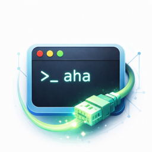

SSH 与终端
多标签会话、密码与 SSH 密钥认证、终端编码、主题、会话日志和常用命令提示。

AHaSSHTools多标签会话、密码与 SSH 密钥认证、终端编码、主题、会话日志和常用命令提示。
目录浏览、收藏路径、上传下载、冲突处理和远程文本编辑，日常文件操作不用离开工作台。
查看 CPU、内存、磁盘、网络与主机信息；每个会话独立开启实时采集。
通过 JDBC 与原生客户端连接关系库、缓存、搜索和消息系统，支持对象浏览与查询。
接入 DeepSeek、OpenAI、Ollama 或自定义服务商，基于当前上下文辅助只读查询和确认后的变更。
桌面端基于 Go、Wails 和 Svelte；Android 与 iOS 使用同一 Go 后端能力。
内置 JSON、Base64、URL 编解码、哈希、AES、SM4、时间戳与 UUID 工具。